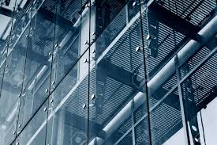
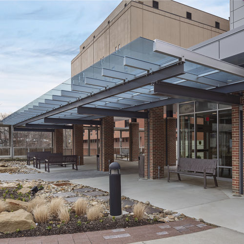
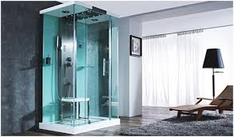
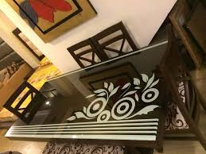

Products & Services We Offer
STRUCTURAL GLAZING
- Facade Glazing
- Canopy Glazing
- Skylight Glazing
CURTAIN WALLS
- Conventional Fully Unitized Glazing
-
Conventional Semi Unitized Glazing
A type of structural glazing where the primary structural framing components are erected individually as an erector set. In this set, the vertical mullions are attached first to the floor slabs and the horizontals are attached to the vertical mullions to resemble a grid. The glass panel and the spandrel, which can be either glass or aluminum, are shop glazed and installed into the assembled grid work. The joineries and perimeter sealants are field installed. The semi unitized systems are largely anchored to the face of the slab as embedded plates or inserts.
SPIDER GLAZING
-
Spider Glazing System
Spider Glazing is a part of the frameless glass system where they provide a flush external appearance with uninterrupted views. Spider Glazing curtain walls provide maximum daylight for building interiors, as well as the possibility of placing large transparent glass surface as building envelopes. Due to its visual attractiveness, such architectural building envelopes are commonly used on commercial buildings to create premium building skills. A wide variety of applications are available, including curtain walls, canopies, and atriums, allowing maximum transparency and brightness optimization and unique design.
 - Shop Fronts
- Glass Canopies
-
Glass Canopy Features
A glass canopy provides an attractive and practical feature to a building. Typically placed outside entrance doors, a canopy protects people entering the building, keeps the weather away from the doors, and allows natural light through to the entrance area. This feature can carry through, providing a sightline past an entrance into a lobby area. While clear glass is a popular choice, other glass options are not excluded. Entrance canopies are overhead glazing by definition, and the selection of an impact-resistant durable product is essential.
 - Structural Glass Fin System
- Point Fixing Facade
- Tension Rod System
ALUMINIUM & OTHER WALL CLADDINGS
-
ACP Cladding
Aluminium Composite Panels "ACP"
ACP is a building cladding material commonly used in internal and external wall systems for its light weight, durability, and structural performance. ACP Cladding systems consist of ACP panels that are typically 4mm to 6mm thick and consist of a core material sandwiched between two thin layers of aluminium. The core material is generally 3mm to 5mm thick with the aluminium sheets each at 0.5mm thick.

- HPL Cladding
- WALL Cladding (Sheets, Composite & Wooden Panels)
ALUMINIUM & UPVC-DOORS & WINDOWS
- Sliding Doors & Windows
- Casement Windows
- French Windows, ETC.
Aluminium Doors & Windows
UPVC Doors & Windows
Foldable Glass Doors
FRAMELESS GLASS APPLICATIONS
- Glass Doors Shower Cubicles
- Interior Partitions
- Glass Sliding Systems
- Glass Folding Systems
- SS Glass Railings
-
Elegant Glass Railing Systems
Glass Railing Systems are sleek and sophisticated. They provide excellent wind barriers while still allowing optimal visibility from your deck or balcony. All of our Glass Railing Systems receive durable powder-coated finishes. Available in a number of tints, glass panels are excellent for exterior decks, balconies, and stairs, yet sleek and elegant for interior railings.
WE ALSO PROVIDE A WIDE VARIETY OF INTERIOR GLASS PRODUCTS SUCH AS
- Lacquered Glass
-
Vibrant and Durable Lacquered Glass
Lacquered Glass is manufactured by depositing and baking a lacquer coating on one side of the base glass, usually clear glass. The lacquer gives it a colored and opaque appearance, bringing an element of vibrancy to any interior application. Unlike Back Painted Glass (BPG) available in the market, the lacquered finish protects the glass from damage, making it highly durable. Lacquered glass contains very minimal amounts of VoCs, and therefore is not only safe to use but also does not harm the environment. It is humidity-resistant and also scratch-proof.
- Laminated Glass
-
Safety and Security with Laminated Glass
Laminated Glass is a safety and security glass that is made by sandwiching a laminated sheet between two pieces of glass. The laminated sheet is a polyvinyl butyral (PVB) sheet that helps in sticking the glass pieces to itself even when the glass is broken. This unique property makes laminated glass an ideal choice for applications where safety is paramount, as it reduces the risk of shattering and enhances security by maintaining the integrity of the glass even after impact.
- Shower Cubicles & Enclosures
-
Quality Showers for Your Bathroom
Bathrooms now come in all shapes and sizes, and as per people's tastes and needs, it varies considerably, especially when looking for a new shower. Kwality Glass offers a top range of quality showers in different looks and features, allowing you to pick the one that suits perfectly for you and your home.
 - Glass Blocks
-
Versatile Glass Blocks
Glass Block or Glass Brick is an architectural element made from glass. Glass Bricks provide visual obscuration while admitting light. They are produced for both wall and floor applications. They are easy-to-install and are available in a variety of styles and sizes. Custom-sized Glass Block panels are also available, offering versatility and creativity in design while adding a touch of elegance to your space.
- Stain Glass
-
Elegant Craftsmanship of Stained Glass
As a material, stained glass is glass that has been colored by adding metallic salts during its manufacture, and usually then further decorated in various ways. The colored glass is crafted into stained glass windows in which small pieces of glass are arranged to form patterns or pictures, held together (traditionally) by strips of lead and supported by a rigid frame. Painted details and yellow stain are often used to enhance the design. The term "stained glass" is also applied to windows in enamelled glass in which the colors have been painted onto the glass and then fused to the glass in a kiln; very often, this technique is only applied to parts of a window. Explore the elegance and craftsmanship of stained glass to add beauty and character to your spaces.
- Digital Print Glass
-
Creativity with Digital Glass Printing
Digital Glass Printing allows you to digitally print anything you imagine directly on the glass. It is a one-of-a-kind creation that lets you print anything that makes sense, from a whole building façade to interior glass. Digital printing with ceramic ink is suitable for all applications, including but not limited to monolithic, insulated, and laminated glass units. Explore your creativity and transform plain glass into captivating artwork or functional designs.
- Self Design Glass
-
Unleash Your Creativity with Self Design Glass
We provide an array of self design glasses to match your home, office, or any particular site you're working for. We design and manufacture glasses in a variety of designs and colors to match your needs. With self design glass, you can unleash your creativity and choose a design that reflects your unique style and preferences. Whether you're looking for a subtle pattern or a bold statement, our self design glass options allow you to transform ordinary glass into a personalized work of art.
- Table Top Glass
-
Versatile Table-Top Glass Bases
We offer a wide range and variety of Table-Top Glass Bases in different shapes and colors based on your personal requirements. Whether you're looking for a round, square, or custom-shaped table-top glass, we have options to suit your needs. Our Table-Top Glass Bases can enhance the aesthetic appeal of your furniture while providing durability and a touch of elegance to your living space.
 - Tempered Glass
- Bent Glass
- Mirrors
- Tinted Glass
-
Functional and Stylish Tinted Glass
Tinted Glass is widely used for residential and commercial purposes, along with automobiles, furniture, and decorative displays. These glasses control the transmission of light and heat and reflect the sun's energy. They also create one-way vision, thereby ensuring privacy. We offer an array of Tinted Glasses that come with a special metallic coating that prevents the subject from seeing through the glass from outside, offering both functional benefits and a stylish look to your space.
- Glass Staircases